Links.
Tastebuds Website Tastebuds InstagramThe team.
Martin Burchett
Alex Larter Charlotte Louise-BeachJacob Bryant
Tastebuds beginnings as a university competition brief.
Giving the "Food & Drink Innovation Cluster" a new name and identity through a university compeition brief. Sprout was the winning route, and the starting point for where Tastebuds is today.
The logo being a growing bud communicates how Tastebuds support and grow local businesses.
Tastebuds, the collective for Food and Drink Innovators — bringing the food and drink industry together, nourishing connection and cultivating success.


The logo — formed from the letter b and bud shapes to look like a plant breaking through its seed. A Metaphor as to how tastebuds can help its members grow.

A sample of social media posts I created using their brand.


Tastebuds has an active presence on social media, letting their founders and their partners know what is new to tastebuds, events coming up and partner's stories.
Their InstagramDesigned ready for Tastebuds to present to their customers.


Using the buds from the logo as a mascot to illustrate what Tastebuds do.
 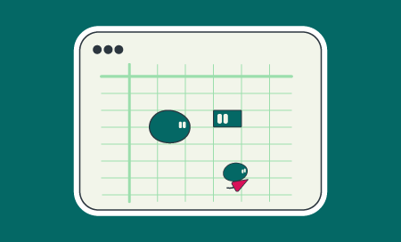
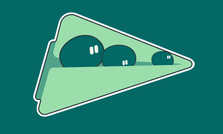
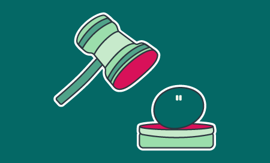
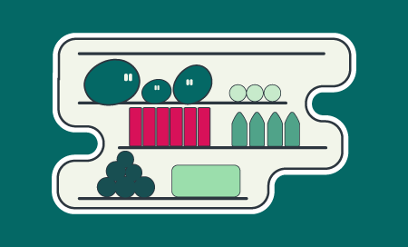
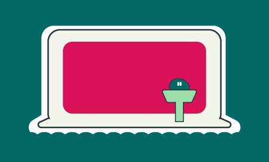
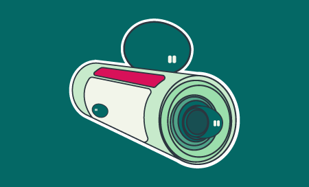
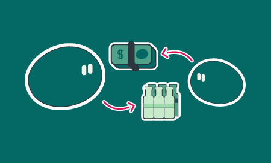
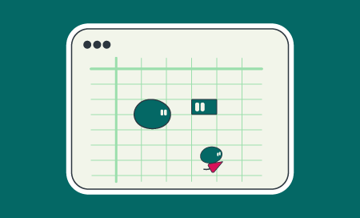
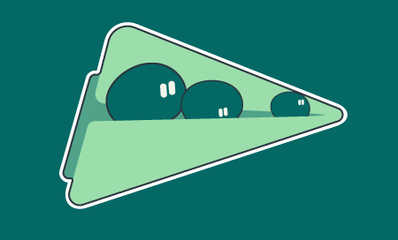
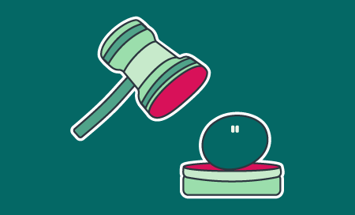
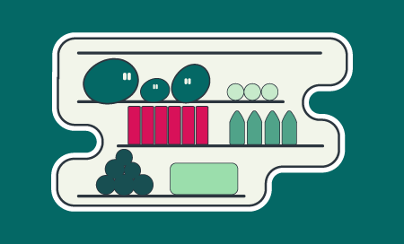
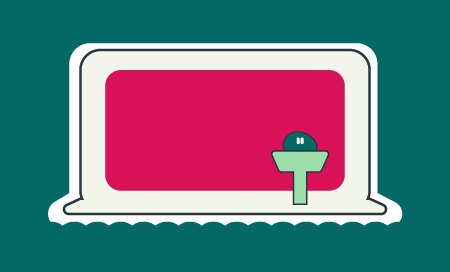
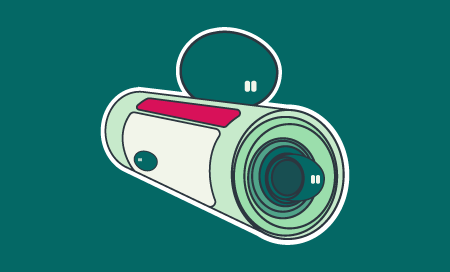
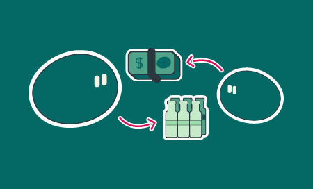
The illustrations use the character mascot — the buds — in various silly situations. Used in social media posts, on the newsletters, and on the website.
Email signatures and the work I helped develop for Tastebud's website .

 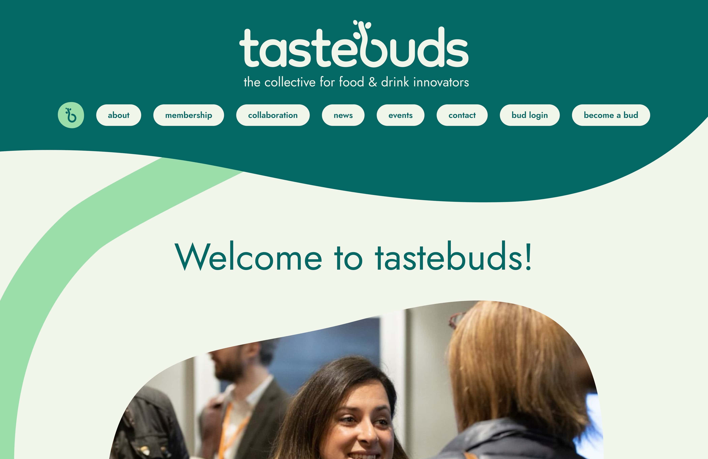
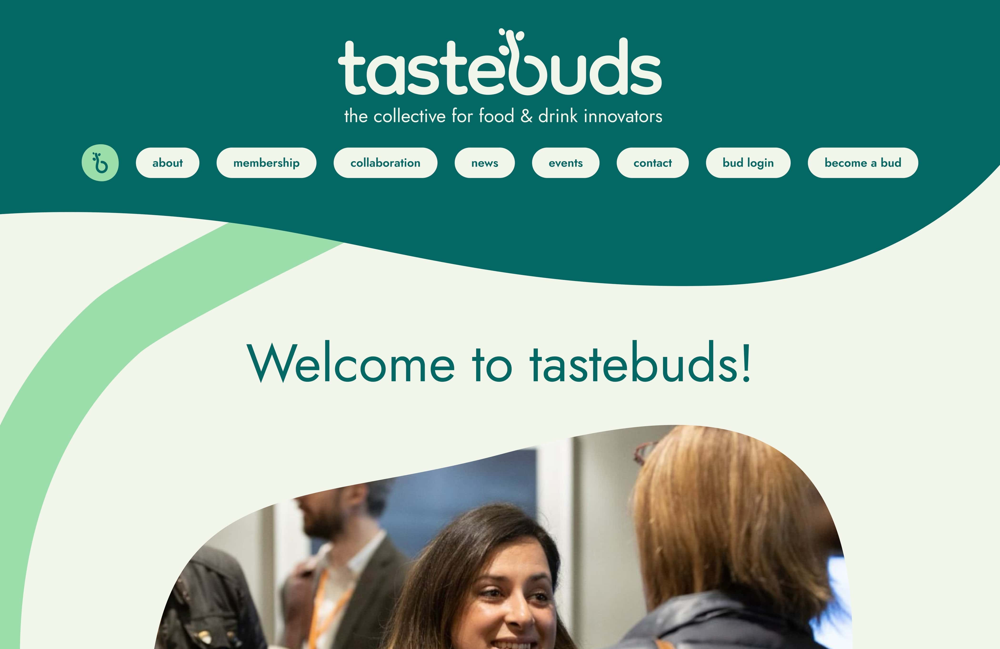

Their new website attempts to be friendlier and have a more fun approach to how they talk with their partners. The website was developed by 101 websites, however I had an input on visual direction and ideas.
Their Website
After months of working with tastebuds, I left them with this styleguide (as well as a variety of templates), that shows how to use the brand elements as clearly as possible, in order for them to continue using the design's effectively.
Working with Tastebuds was an opportunity I'll reflect on throughout my design career, and I am grateful to have had such a fantastic start in the industry, especially only being in my second year of university.
This experience not only helped me to develop my design and motion skills, but also skills in public speaking and project management, helping my confidence and allowing me to develop into a better designer.
It’s an amazing feeling to know my design work is out in the world, and I couldn’t have asked for a better team to collaborate with.
A huge thank you to Alex, Charlotte, and Martin for giving me the chance to work with them. I wish Tastebuds all the best for the future!
— Jacob